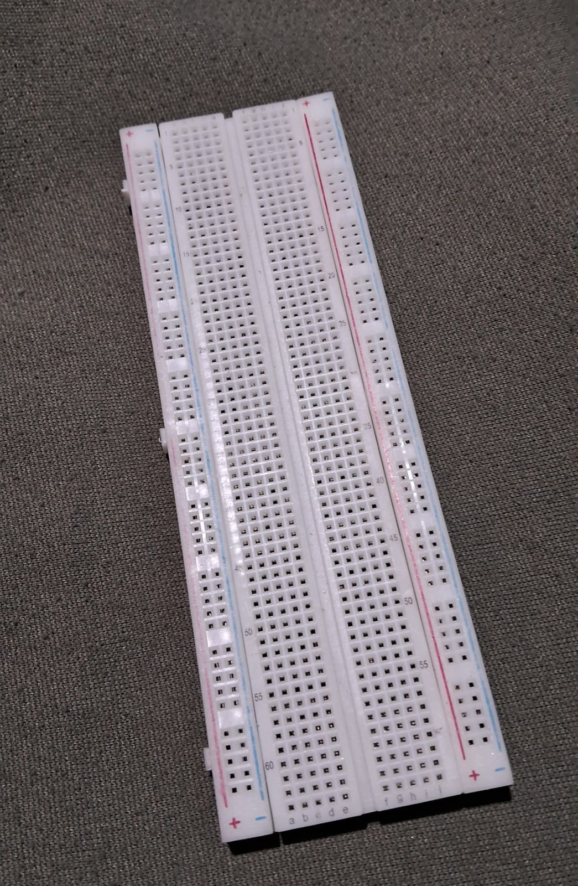
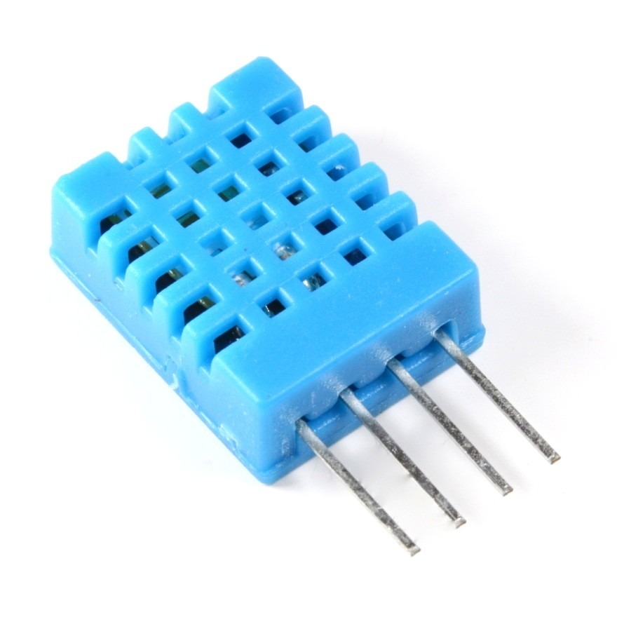

¿Quienes somos?
Somos un grupo de estudiantes que busca solucionar problemas en el sector agrícola mediante el uso de la automatización, para cumplir nuestro objetivo creamos M.O.A.I.S y un sistema de riego automatizado en una huerta hidroponica.
Somos un grupo de estudiantes que busca solucionar problemas en el sector agrícola mediante el uso de la automatización, para cumplir nuestro objetivo creamos M.O.A.I.S y un sistema de riego automatizado en una huerta hidroponica.
Ayudar a los agricultores o interesados en el sector agrícola a optimizar su tiempo y a ahorrar recursos tan importantes como el agua, cuidando no malgastarlo y cuidando así sus cultivos.
Un sistema de riego automatizado que incluye sensores que miden la temperatura del ambiente y humedad que al mostrar cierto rango de humedad se activara la bomba que pone a funcionar el sistema de riego mediante un riego de goteo suministrara los cultivos, que seguira un ciclo que llevara el agua restante a la bomba nuevamente además incluye un buzzer que alertara sobre el funcionamiento del sistema con leds que cumplen una función parecida. También cuenta con un display que muestra su activación y los valores medidos por los sensores.
Poder controlar el riego de plantas mediante procesos automatizados.
Llevar estos procesos a escala país para poder realizar más fácilmente el riego de diferentes cultivos según sus necesidades.
"Es una herramienta simple que se usa en proyectos de robótica que permite conectar fácilmente componentes electrónicos entre sí, sin necesidad de realizar una soldadura.” (Martínez,2021, parra.1) Herramienta utilizada para el montaje de componentes electronicos.
“Es una plataforma de creación de electrónica de código abierto, la cual está basada en hardware y software libre, flexible y fácil de utilizar para los creadores y desarrolladores.”( Fernández, 2022,parra.3) Plataforma utilizado por creadores para desarrollar proyectos.

“Sensor DHT11 que nos permite medir la temperatura y humedad con Arduino.”(Hernandéz, 2017,parra.1) Sensor que trabaja con Arduino que mide tanto temperatura como humedad.
“El higrómetro es el aparato que sirve para medir la humedad.”(Porto y Merino, 2020, parra.2) Aparato utilizado para medir la humedad.
“Dispositivo que consigue convertir la energía mecánica que posibilita su accionar en energía de un fluido incompresible que ella misma consigue desplazar.”( Porto y Merino, 2018,parra.4) Dispositivo que mueve fluidos por medio de la energía mecánica.
“Los relevadores, en definitiva, permiten desarrollar una conmutación a distancia, controlando altas tensiones con un bajo voltaje en retorno. También sirven para interrumpir la alimentación de corriente alterna.” (Porto y Gardey, 2024, parra.3) Interrumpe el paso de corriente y la controla.
“Una pantalla de LCD muestra las imágenes a partir de esa retroiluminación que permite la combinación de los colores.” (Porto y Gardey, 2023, parra.3)

“Un potenciómetro es un dispositivo que se utiliza para la medición de las diferencias de potencial eléctrico.” (Porto y Gardey, 2023, parra.1) Dispositivo que se utiliza para medición de potencial eléctrico.
“Al componente de un circuito que dificulta el avance de la corriente eléctrica.” (Porto y Gardey, 2021, parra.1)
“Un jumper es un elemento conductor usado para conectar dos terminales para cerrar un circuito eléctrico.”(Alegsa, 2023, parra.1) Conductor que conecta dos terminales para cerrar un circuito.